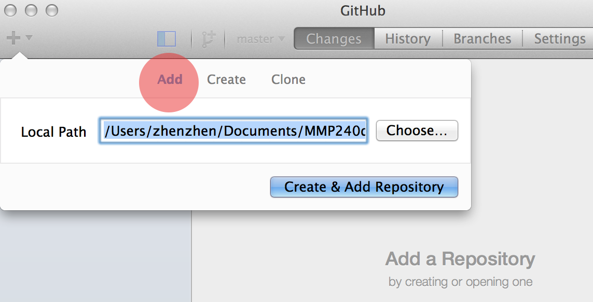
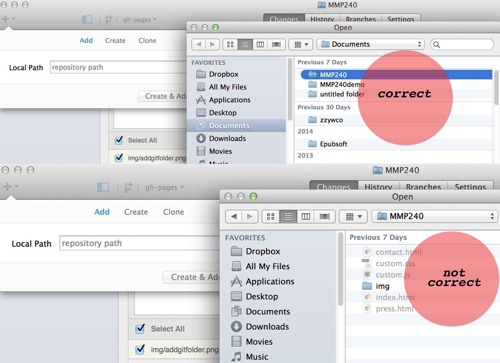
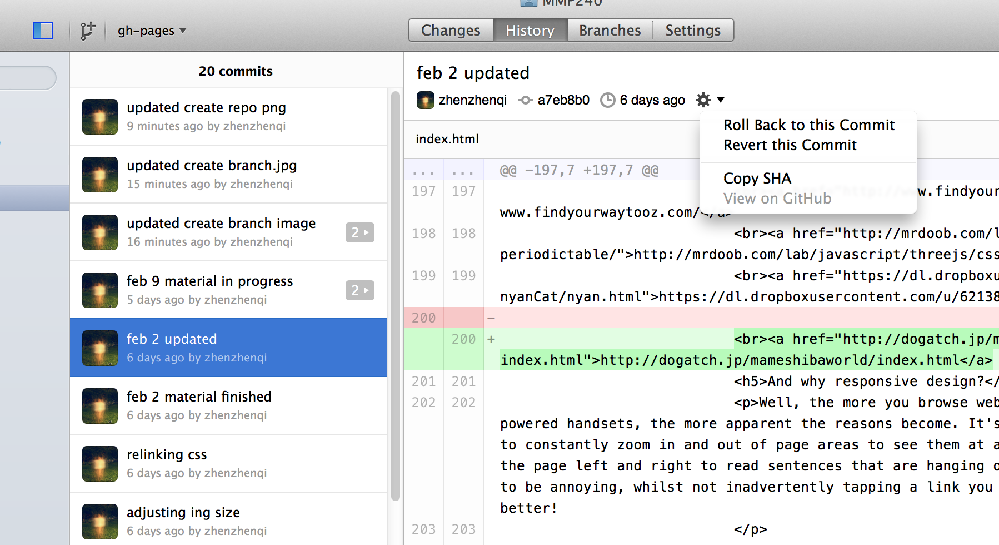

Warning 1! The default repo setting is "create", make sure you click "add", which is the tab to the left of "create"
Warning 2! When you add the path, it's very important that you click on the WEBPROJECTS folder icon just once, so that the folder icon is highlighted, but you can't see the files that's actually inside the WEBPROJECTS folder.
If anything goes wrong at any point during development, you can always go to "history", choose a previous version and rollback to this old version. See picture below.
